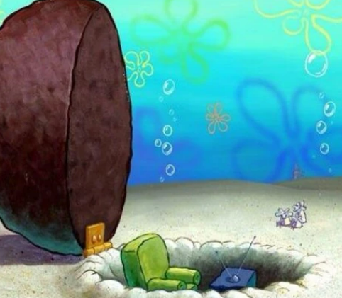

Patrick'in evine gittin.

Patrick'in evine gittin. Ev boştu ama dikkatlice baktığında Patrick'in 2007 model fosil laptopunun açık kaldığını gördün.
Laptopta ne oynadığına bakmak için yaklaştın ama ekranda sadece Bikini Telekom'un sayfası açıktı. (Laptop hala sayfayı yüklemeye çalışıyordu.)
Patrickle Bikini Telekom'un nasıl bir alakası olabilir ki?
Sahile git